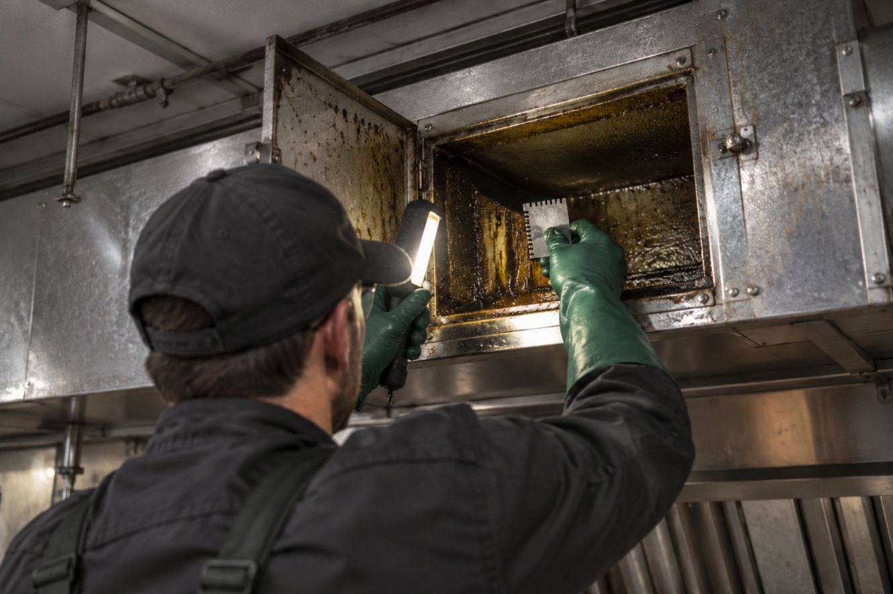

Home / Reports & certificates
Reports and certificates after every service.
After a kitchen fire, a claims assessor asks six things: what was done, when, to what standard, measured how, by whom, and what was known to be outstanding. An invoice records the visit. A Summit certificate answers all six from the document alone.
Serviced & certified to AS 1851-2012
| Position | Before | After | Result |
|---|---|---|---|
| AP-1canopy plenum | 1,400 μm | 40 μm | Within criteria |
| AP-2horizontal run | 900 μm | 30 μm | Within criteria |
| AP-3riser base | 2,600 μm | 50 μm | Within criteria |
| Riser above AP-3 | — | — | Not accessed · register #1 |
Acceptance: after cleaning, no single test above 50 μm (AIRAH Best Practice Guide 2022, §5.10). Between services the system mean is kept below 200 μm (§5.8.2); localised deposits of 2,000 μm or more are cleaned urgently (§4.4). Criteria are the guide’s, never attributed to AS 1851-2012. Illustrative values, in μm.
| # | Location | Severity | Recommended action |
|---|---|---|---|
| 1 | Riser above AP-3 | Major | Install access panel; service on next visit |
| 2 | Fan discharge cowl | Minor | Fit rooftop containment; monitor |
Nine things, without exception.

AS 1851-2012, Section 13 — fire and smoke control features of mechanical services — is the only edition cited. The acceptance criteria are the AIRAH Commercial Kitchen Exhaust Management — Best Practice Guide (2022)’s: no single post-clean test above 50 μm, a system mean kept below 200 μm between services, and urgent cleaning of any local deposit of 2,000 μm or more. They are attributed to the guide, never to the standard.
A micron-scale grease-depth reading at every duct access point opened, position-labelled, before and after works. Where deposit is uneven, the reading is taken at the heaviest accumulation within reach.
Every photographed position is re-shot after works from the same position and framing. One label per pair, matching the reading labels.
Whether the whole system was serviced or only part of it, stated plainly, with every section not accessed listed and the reason.
Every deficiency observed, with a sequential number, location, severity (Critical, Major or Minor), photo reference, recommended action and a recommended re-inspection interval.
Compliant: every serviced section meets the criteria and no limitation was recorded. Compliant with limitations: the works meet criteria where performed and every outstanding item is listed on the certificate itself. Never a third, softer word.
Your servicing interval is set at the site survey from cooking load, fuel type, hours and measured accumulation, and is written on your certificate. No Summit document asserts a servicing frequency on the standard’s behalf.
Certificate number, venue, service date, service category, the attesting entity and the technician who performed the works.
SAM-CERT-####: four digits, strictly sequential, never reused, never reissued under the same number. A superseding certificate takes a new number and names the one it replaces.
The works report walks the whole system.
The certificate summarises; the works report goes component by component — canopy, filters, plenum, each access point, riser, fan and discharge — with its readings, its photo pair and its result per line. It is written to be read in two minutes by someone who was not there.
Kitchen exhaust — component by component
| Component | Before | After | Photo |
|---|---|---|---|
| Canopy & filters | 1,100 μm | 30 μm | CAN-B1 / A1 |
| AP-1 · canopy plenum | 1,400 μm | 40 μm | AP-1-B1 / A1 |
| AP-2 · horizontal run | 900 μm | 30 μm | AP-2-B1 / A1 |
| AP-3 · riser base | 2,600 μm | 50 μm | AP-3-B1 / A1 |
| Riser above AP-3 | Not accessed | — | AP-3-B2 · register #1 |
| Fan chamber & discharge | 700 μm | 30 μm | FAN-B1 / A1 |
Acceptance: after cleaning, no single test above 50 μm (AIRAH Best Practice Guide 2022, §5.10). Between services the system mean is kept below 200 μm (§5.8.2); localised deposits of 2,000 μm or more are cleaned urgently (§4.4). Criteria are the guide’s, never attributed to AS 1851-2012. Illustrative values, in μm.
| # | Location | Severity | Photo | Recommended action |
|---|---|---|---|---|
| 1 | Riser above AP-3 | Major | AP-3-B2 | Install access panel; service on next visit |
| 2 | Fan discharge cowl | Minor | FAN-B1 | Fit rooftop containment; monitor |
Built for the three people who will ask for it.
Your insurer
Maintenance records are among the first documents requested after a kitchen fire. A certificate that carries its own readings, photographs and register can be read without a phone call; one that does not invites dispute.
Your Form 3 signatory · SA
Where the exhaust system sits on a building’s Essential Safety Provisions schedule, the owner’s annual Form 3 relies on maintenance evidence. The certificate is built to hand straight across.
Your auditor
Council, food-safety and internal audits ask the same question: can you produce the records? Per site, current, and produced on request.
How the record is held
Every certificate, works report and photo set is filed against the site and the component it describes. The record outlives the visit.
Canopies, access panels and key components are tagged at first service, so a record can be found from the asset itself.
A component’s full service history, readings and photographs are produced on request — for the audit, the claim or the handover.
For groups, the same records are consolidated across every site so the whole position can be read at once.
Evidence from the first visit.
Start with a site survey — the same instruments, the same benchmark and the same evidence discipline as the certificate, on your own kitchen.
enquiries@summitam.au · 0411 854 283